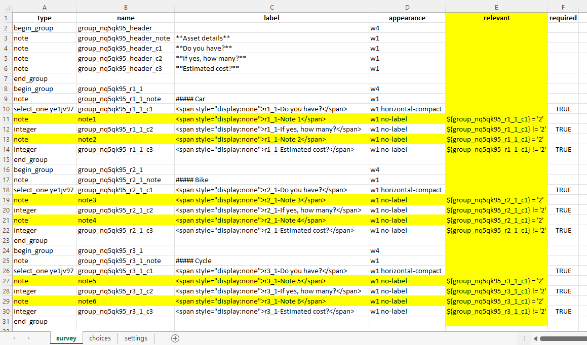
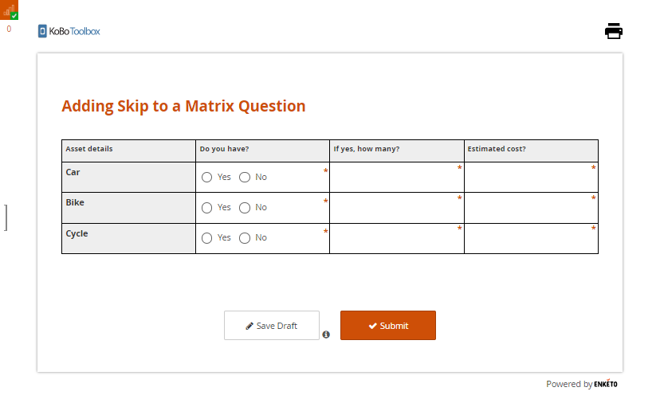
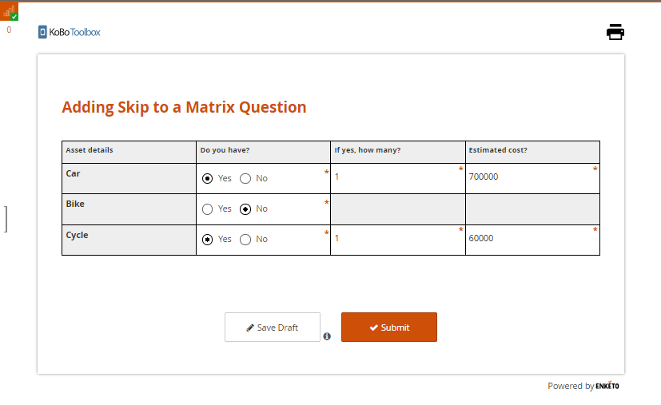
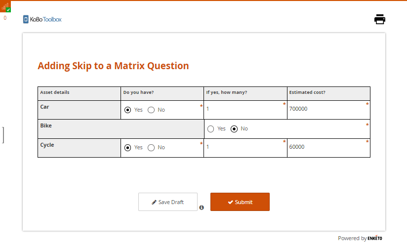
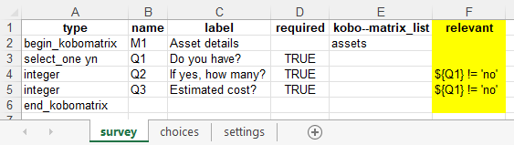
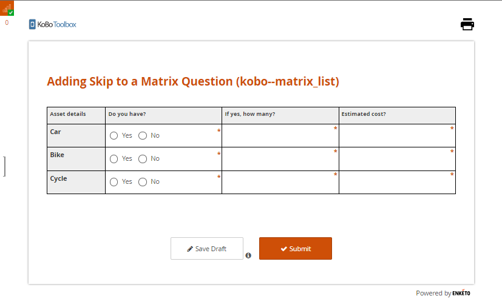
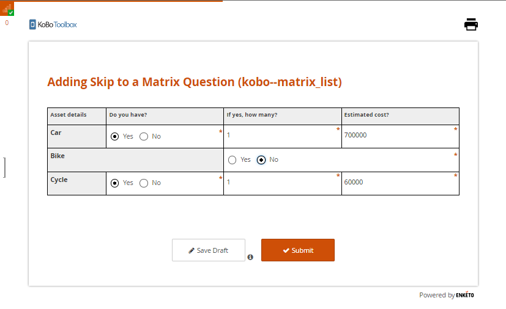

Search the knowledge base, browse our resources, and visit our forum for more detailed information
Read in English | Lire en français | اقرأ باللغة العربية
Última actualización: 11 Mar 2022
En la mayoría de las situaciones, puedes añadir lógica de salto a cualquier tipo de pregunta como se describe en
el artículo de ayuda Añadiendo Lógica de Salto. Sin embargo, cuando
trabajas dentro del editor de formularios de KoboToolbox (Formbuilder), añadir lógica de salto a una pregunta de matriz aún no es
posible. En su lugar, se puede usar un XLSForm para implementar lógica de salto para este
tipo de pregunta. Este artículo de ayuda ilustra cómo puedes añadir lógica de salto a una
pregunta de matriz usando XLSForm.
Si has revisado el artículo de ayuda
Tipo de Respuesta de Matriz de Preguntas, ya sabrás
que hay 2 enfoques para crear una pregunta de matriz en KoboToolbox: el
enfoque del editor de formularios y el enfoque kobo--matrix_list. Este artículo de ayuda
proporciona una descripción general de los pasos necesarios para añadir lógica de salto a una
pregunta de matriz al usar cualquiera de estos enfoques.
Este enfoque funciona con Enketo, también conocido como formularios web, utilizando el diseño de tema de cuadrícula (Grid-theme). Puede que no funcione como se espera si ignoras la configuración del diseño de tema de cuadrícula (Grid-theme) como se describe en el artículo de ayuda Usando Estilos Alternativos de Formularios Web de Enketo.
Sigue los pasos descritos a continuación para añadir lógica de salto a una pregunta de matriz usando
el enfoque del editor de formularios.
Paso 1: Crea una pregunta de matriz en el editor de formularios:
El primer paso es crear una pregunta de matriz en el editor de formularios como se describe
en el artículo de ayuda Tipo de Respuesta de Matriz de Preguntas.
Simplemente añade filas y columnas con las variables para las que deseas recolectar datos.
Paso 2: Descarga el formulario como XLSForm:
Una vez que la pregunta de matriz esté lista, GUARDA el formulario y luego
descárgalo como un XLSForm.
Paso 3: Añade el encabezado de columna relevante y lógica de salto a tu XLSForm:
Ahora abre el XLSForm y luego añade el encabezado de columna relevant al XLSForm.
Una vez que tengas el encabezado de columna relevant, podrás añadir lógica de salto
a todas las preguntas según sea necesario.
Para mejorar la forma en que se muestran las preguntas de matriz al
responder, se recomienda añadir un tipo de pregunta note (resaltado en amarillo
en la imagen a continuación) y luego incluir lógica de salto según corresponda. Esto es
completamente opcional ya que simplemente afectará el formato de la pregunta de
matriz. La diferencia de usar y no usar el tipo de pregunta note se
ilustra a continuación en el Paso 6: Recolectar Datos.

Paso 4: Reemplaza el XLSForm:
Carga y reemplaza tu XLSForm en el proyecto existente, o crea un nuevo proyecto (si es necesario).
Paso 5: Despliega el Formulario:
Una vez que hayas reemplazado el XLSForm (o cargado el XLSForm como un nuevo proyecto), necesitarás desplegar tu formulario.
Paso 6: Recolecta Datos:
Después de desplegar el formulario, puedes ir a FORMULARIO>Recolectar Datos>ABRIR para comenzar a recolectar datos con el formulario web.
Pantalla de entrada de datos como se ve en Enketo (formulario web): cuando no se ingresa nada.

Pantalla de entrada de datos como se ve en Enketo (formulario web) con el tipo de pregunta note
añadido: cuando la pregunta de matriz está completada.

Como puedes ver en la imagen anterior, el formato de la pregunta de matriz no se ha
distorsionado. Así es como se mostrará la tabla de matriz cuando uses
el tipo de pregunta note que se resaltó en la imagen compartida anteriormente.
Pantalla de entrada de datos como se ve en Enketo (formulario web) con el tipo de pregunta note no
añadido: cuando la pregunta de matriz está completada.

En este caso, el formato de la pregunta de matriz se ha distorsionado. Esta es
la tabla de matriz que se mostrará cuando no se use el tipo de pregunta note.
Puedes acceder al XLSForm
aquí
que se usó para este enfoque
(añadiendo lógica de salto a una pregunta de matriz usando el enfoque del
editor de formularios).
kobo--matrix_list:¶Al igual que con el enfoque del editor de formularios, este método de añadir lógica de salto con un XLSForm funciona con Enketo usando el diseño de tema de cuadrícula (Grid-theme).
Sigue los pasos a continuación para añadir lógica de salto a una pregunta de matriz con un XLSForm
usando el enfoque kobo--matrix_list.
Paso 1: Crea una pregunta de matriz en el XLSForm:
Crea una pregunta de matriz en el XLSForm, como se describe en el artículo de ayuda
Tipo de Respuesta de Matriz de Preguntas.
Paso 2: Añade el encabezado de columna relevant y lógica de salto a tu XLSForm:
Una vez que la pregunta de matriz esté lista, debes añadir el encabezado de columna relevant.
Ahora puedes añadir lógica de salto a todas las preguntas bajo el encabezado de columna
relevant.

Paso 3: Carga el XLSForm:
Si tu XLSForm está listo, cárgalo como un nuevo proyecto.
Paso 4: Despliega el Formulario:
Una vez que hayas cargado el XLSForm, necesitarás desplegar tu formulario.
Paso 5: Recolecta Datos:
Ahora puedes ir a FORMULARIO>Recolectar Datos>ABRIR para comenzar a recolectar datos.
Pantalla de entrada de datos como se ve en Enketo (formulario web): cuando no se ingresa nada.

Pantalla de entrada de datos como se ve en Enketo (formulario web): cuando la pregunta de matriz está
completada.

Como puedes ver en la segunda imagen, el formato de la pregunta de matriz se ha
distorsionado. En el enfoque kobo--matrix_list no tienes el espacio para corregir
la tabla de matriz como lo tenías con el enfoque del editor de formularios.
Puedes acceder al XLSForm
aquí
que se usó para este enfoque
(añadiendo lógica de salto a una pregunta de matriz usando el
enfoque kobo--matrix_list).
Did you find what you were looking for? Was the information clear? Was anything missing?
Share your feedback to help us improve this article!
KoboToolbox is maintained by Kobo Inc.